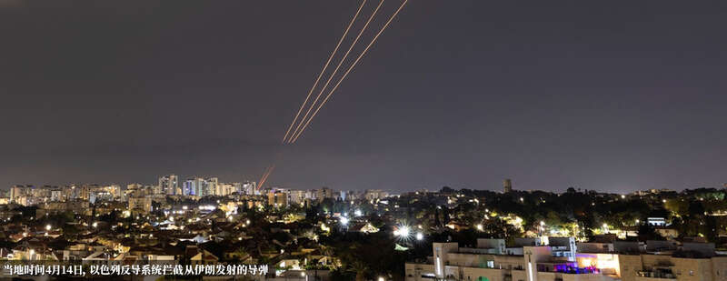
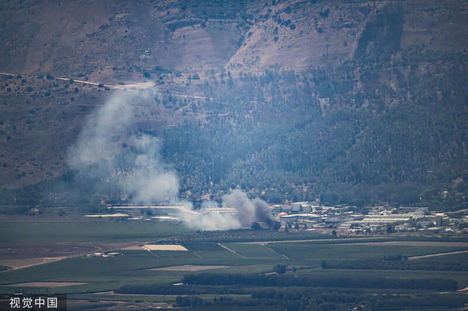

综合报道，当地时间8月5日，黎巴嫩真主党宣布对以色列北部军事目标发动袭击。
据伊朗国家通讯社(IRNA)报道，黎真主党5日在一份声明中表示，其使用多架无人机对以军第91师总部发动了袭击，造成人员伤亡。此次行动是对以军在黎南部多个地点发动暗杀和袭击的回应。
另据《以色列时报》报道，以军方称，黎真主党向以色列北部阿耶莱特哈沙哈尔附近发动袭击，造成一名军官和一名士兵受伤。此外，袭击还在该地区引发火灾。
巴勒斯坦伊斯兰抵抗运动（哈马斯）政治局领导人哈尼亚在德黑兰遇袭身亡后，伊朗誓言报复凶手以色列。美国Axios新闻网当地时间8月4日援引3名消息人士的话说，美国国务卿布林肯当天对七国集团（G7）外长表示，伊朗和黎巴嫩真主党或最早5日开始袭击以色列。
美媒：布林肯透露，伊朗和黎巴嫩真主党最早5日袭击以色列
据《纽约时报》报道，黎巴嫩真主党和以色列方面4日均表示他们袭击了对方领土内的目标。

当地时间2024年8月4日，以色列北部基利亚特什姆纳，从黎巴嫩南部发射的火箭弹击中该地区后，浓烟滚滚视觉中国
Axios称，布林肯和G7外长举行电话会议是为了与美国的亲密盟友进行协调，并试图在最后时刻对伊朗和黎巴嫩真主党施加外交压力，尽可能将其报复降到最低限度。布林肯强调，限制伊朗和真主党的袭击影响是防止爆发全面战争的最佳机会。
消息人士表示，布林肯称，美国认为伊朗和黎巴嫩真主党都会对以色列进行报复，但目前尚不清楚报复会采取什么形式，美国也不知道袭击的具体时间，可能在接下来的24至48小时内开始，也就是最早于周一（5日）开始。
布林肯要求G7外长对伊朗、黎巴嫩真主党和以色列施加外交压力，要求其保持最大程度克制。
消息人士还透露，布林肯向G7外长介绍最近与以色列就加沙人质和停火协议进行的谈判时，“他（布林肯）听起来很沮丧”。布林肯表示，在哈尼亚遭暗杀前，美国政府感到谈判已“接近突破”。布林肯表示，现在比以往任何时候都需要达成一项协议。
Axios援引以色列官员的话说，美国中央司令部司令库里拉（Michael Erik Kurilla）预计将于5日抵达以色列，与以色列国防军一起完成针对可能遭遇伊朗和真主党袭击的准备工作。
白宫副国家安全顾问乔恩·芬纳（Jon Finer）4日在哥伦比亚广播公司的一档节目中表示，“我们正处于一个似乎威胁加剧的时刻……我们正在为每一种可能性做准备。”芬纳称，美国将和以色列合作，“共同抵御它所面临的任何威胁。”
美国“政客新闻网”报道，美国国防部当地时间8月2日表示，美国正向中东地区派遣更多军队和武器装备，以保护以色列和驻扎在中东地区的美军。报道称，美国防部长劳埃德·奥斯汀已下令“亚伯拉罕·林肯”号航母战斗群前往该地区。
Axios称，以色列总理内塔尼亚胡4日晚间和以国防部长加兰特、以军和情报部门负责人举行会议。内塔尼亚胡声称，“伊朗及其‘爪牙’正企图用恐怖主义扼杀我们，我们决心在远近各条战线和各领域与他们作斗争。无论谁想伤害我们，都将付出沉重的代价。”
《以色列时报》援引希伯来语媒体报道，如果以色列方面认为德黑兰确实准备发动袭击，以色列可能会考虑“先发制人”。但该国安全官员表示，只有在以色列收到明确的情报，确认德黑兰即将发动袭击时，这样的行动才会被授权。
当地时间4月14日，从以色列阿什凯隆眺望，以色列反导系统正在拦截从伊朗发射的无人机和导弹。IC Photo
今年4月13日，为报复驻叙利亚领事馆设施遇袭，伊朗对以色列境内发动大规模空袭，发射300多枚导弹及无人机。伊朗方面曾表示，其向以色列发射的导弹中，有约一半成功击中目标。但以色列表示，约99%的导弹和无人机被以色列及其盟友拦截。
《以色列时报》称，即使这次伊朗方面攻击的规模更大，以政府内部的评估是，以色列将能够承受住攻击，并在盟友的帮助下再次开展适当的防御。
近期，黎巴嫩真主党和哈马斯高级官员相继遭以色列袭击身亡，地区紧张局势进一步加剧。随着局势恶化，美国、英国、法国等呼吁在伊朗、黎巴嫩的本国公民“尽快离开”。
《华尔街日报》4日报道，伊朗拒绝了美国和其他阿拉伯国家试图缓和其反应的努力。据知情人士透露，伊朗方面3日告诉阿拉伯国家的外交官，伊朗并不在乎他们的反应是否会引发战争。
据《纽约时报》报道，黎巴嫩真主党当地时间4日表示，其向以色列北部的贝特希勒尔发射了数十枚火箭弹。社交媒体上发布的图片显示，以色列的“铁穹”防空系统拦截了一些火箭弹。
报道援引以色列军方的话说，有几枚炮弹落在“开阔地带”，其中一枚落在村庄地区，没有任何人受到伤害。以色列军方表示，作为回应，他们击中了火箭弹的发射场。
但据以色列《国土报》（haaretz）报道，以色列国防军表示，一名以军官和一名士兵被来自黎巴嫩的火箭弹炸伤，有关地区还发生了火灾。